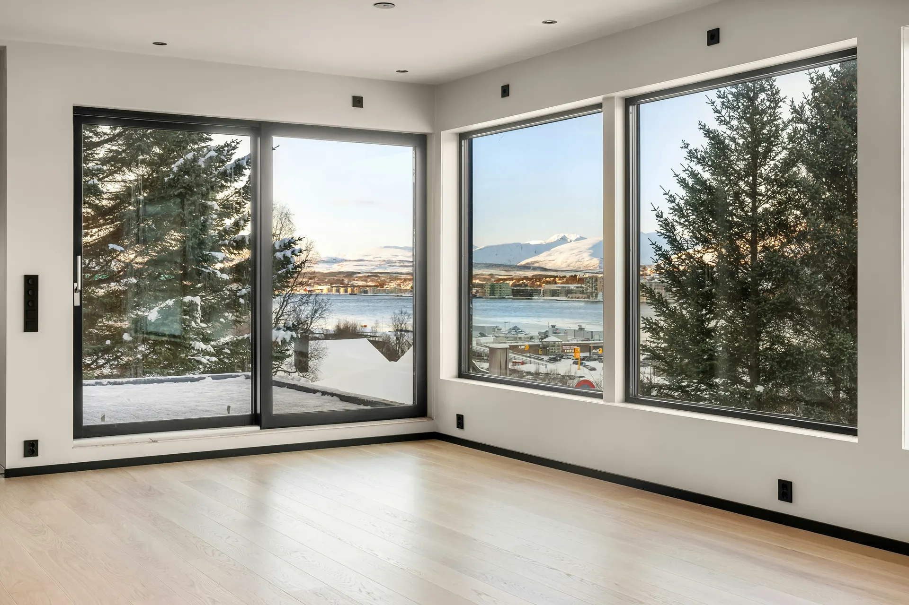
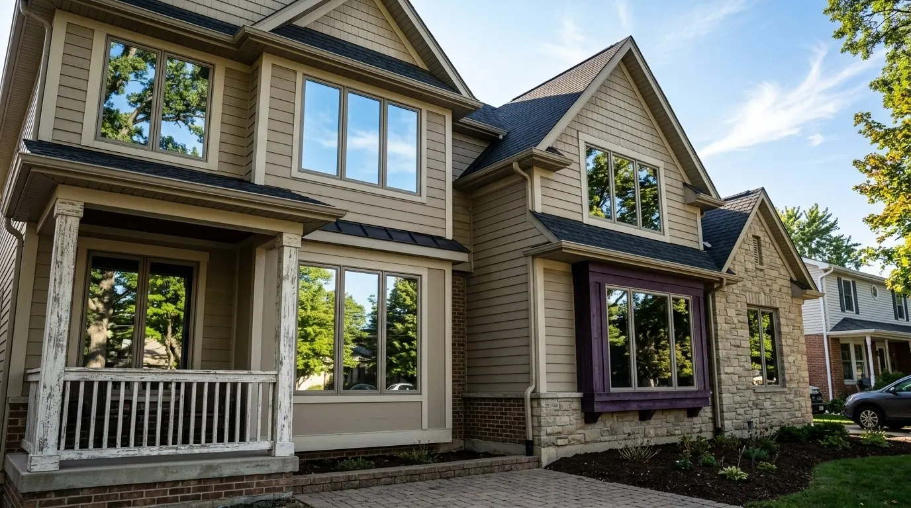

Protect your interior
UV is what fades furniture, floors and fabrics over time. Most films reject up to 99% of UV, protecting the inside of your home.

Less heat and glare, up to 99% UV rejection, more privacy and lower energy bills.
Window tinting isn’t just for vehicles. It’s one of the easiest upgrades you can make to your home, installed by 1TakeTints after an in-home consultation.
Residential window film helps reduce heat and glare, blocks harmful UV rays, adds privacy and can even lower your energy bills, a smart, cost-effective way to make your home more comfortable year-round.
UV is what fades furniture, floors and fabrics over time. Most films reject up to 99% of UV, protecting the inside of your home.
Your windows let in light, but also heat and rising energy bills. Film improves efficiency without giving up the view you love.
Privacy film lets you relax at home without feeling exposed, without blocking your view or darkening the room.
Standard glass is one of the weakest points of entry. Security film is a discreet, effective way to reinforce it.
Performance depends on the film and your glass. 1TakeTints recommends a film after checking your windows in person.

Trained by the best installers in the industry, 1TakeTints brings the highest quality materials, precise and clean workmanship, and clear education on what a proper installation looks like, from start to finish.
A consultation isn’t just for measurements. Most importantly, we meter your glass to find the right film. The wrong film on the wrong glass can lead to cracking or shattering.
Call or send the form with your city or ZIP. We’ll set a time that works for you.
Every window is measured in person so your quote fits your home exactly.
A proper glass reading shows which films are safe for your windows, before anything is installed.
Heat and glare, UV protection, privacy or security: pick the film that matches each room.
High-quality materials and careful workmanship, treating your home with respect.
We walk you through what a proper installation looks like and how to care for your film.
Living rooms, bedrooms, sliding doors and big view windows: the right film keeps the light you love and the heat you don’t.

Every home is different, so every quote starts with a visit.
Residential film reduces heat and glare, blocks harmful UV rays, adds privacy and can lower energy bills. Security film also reinforces glass, one of the weakest points of entry in a home.
To take measurements and, most importantly, to meter your glass. Installing the wrong film for your type of glass can lead to the glass cracking or shattering, so we check before recommending anything.
It doesn’t have to. Privacy and heat-rejecting films are available that keep natural light and your view, without darkening the space. We’ll show you options at the consultation.
Yes. UV is what fades furniture, floors and fabrics over time, and most films reject up to 99% of UV rays, helping protect the inside of your home.
Film reduces the heat coming through your windows, which helps keep rooms comfortable and eases the load on your A/C. How much it saves depends on your home, your glass and the film you choose.
It depends on the number and size of windows, the film and your glass. You’ll get a quote for your home after the in-person measurement and glass reading. Right now there’s up to 20% off residential window tint.
Yes. 1TakeTints is offering up to 20% off residential window tint. Ask about the offer when you call or at your consultation to see what applies to your project.
1TakeTints is based at 2936 D Ave, Unit 106, National City, CA 91950 and serves homes in the San Diego and Chula Vista area. Call (619) 845-5558 to check your location and schedule a consultation.